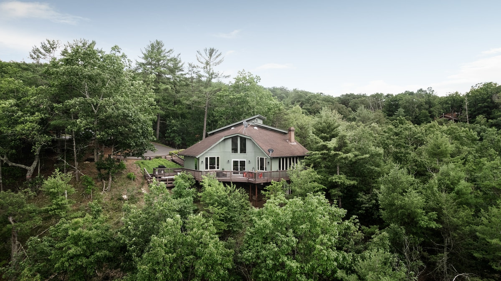

A relaxed first ski weekend at Bryce Resort
A practical plan for a first ski weekend in Basye: reserve lessons before you arrive, check the mountain on the day, and leave room to unwind afterward.

Explore Bryce Resort, Lake Laura, and the quiet places around Basye.
Explore the storiesWhat brings us back: days at Bryce Resort, hikes, Lake Laura, the views, and the quiet. These notes share useful ideas for exploring at your own pace.
Hours, access, and seasonal offerings can change. Check each destination’s official information before you set out.
After a day out, the chalet is ready for the slower part of the story.